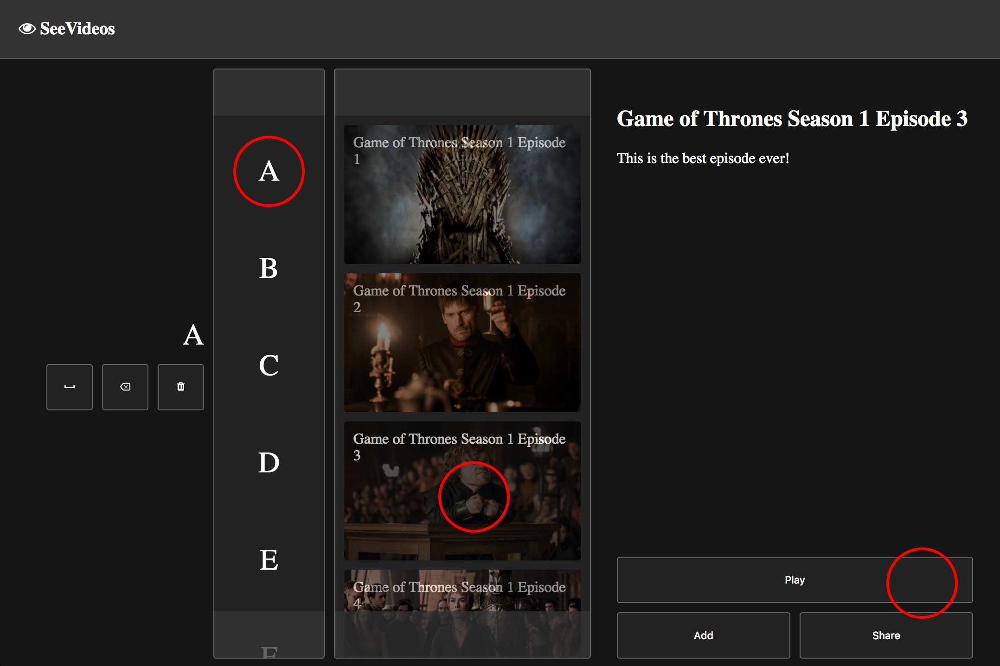
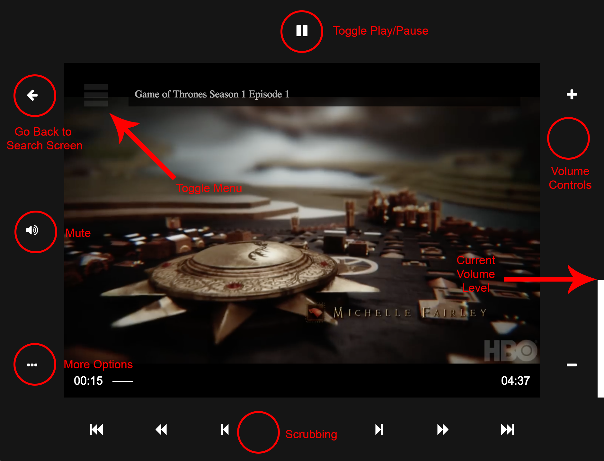

This website was designed to provide a video catalogue service to paralyzed people
It works by having all the elements and behaviors controlled using the user's eye gaze
In other words, there is no clicking. To 'activate' a button, hover over it for 3-5 seconds
Some elements constantly activate as you hold your mouse over it
Elements that refresh/close pages require a longer hover to prevent accidental maneuvers
Searching a Video
Search for a video by hovering over the letters that make up the title
As you search, videos will appear next to the letter selector column
Hover over a video thumbnail to select the video
Once selected, you can view a short description of the video and start playing

Controlling a Video
As your video plays, you can hover over the top left corner to toggle the menu
Within the menu you can set subtitles, scrub, change volume, mute, and return back to the search screen.
At any time you can close the menu and maximize the video by hovering over the menu button again

{{ working }}
{{ letter }}
{{ video.name }}
{{ selected.name }}
{{ selected.description }}
Choose Friends to Share
You won't believe the video I just found on SeeVideos! I sent you a link to go check it out. You don't even need to make an account to start watching. Let me know what you think!